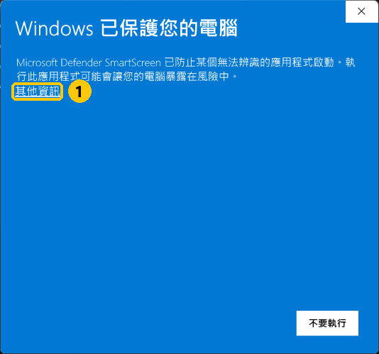
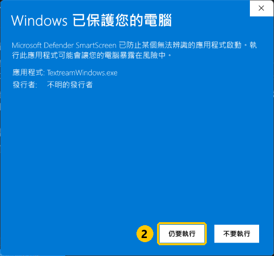

你講到哪，高亮
就跟到哪。
Textream for Windows 是一套免費、開源的提詞機，有逐字追蹤、定速捲動、有講話才捲三種帶稿方式。講稿浮在螢幕最上緣、最靠近鏡頭的地方，也可以改成浮動視窗，或是在第二螢幕全螢幕顯示。語音辨識全部在你的電腦上進行，錄影和分享畫面時，觀眾看不到提詞，只有你看得到。
適合直播主・訪談主持人・簡報講者・Podcaster・影音創作者
解壓縮 → 雙擊 TextreamWindows.exeWindows 10（2004 版以後）／ Windows 11・64 位元・不用註冊，不用另外安裝 .NET
不用再背稿，也不用一直低頭偷看筆記。講稿就放在鏡頭旁邊，只有你看得到，念到哪裡亮到哪裡。講錯一句、跳過一段、臨時插一句話，它會自己找回位置。觀眾看到的是你看著他們說話，你看到的是下一句。
為對著鏡頭說話的人而做
直播、錄影、線上簡報、錄 Podcast，眼睛都可以留在鏡頭上。
直播主
業配口播、活動公告、今天要講的重點，眼睛不用離開鏡頭。
訪談主持人
問題清單放在鏡頭旁邊，看著來賓說話，也不會漏掉該問的題目。
簡報講者
線上簡報、產品示範，講稿浮在投影片上方，分享畫面時對方看不到。
Podcaster
節目大綱、廣告稿、開場白照著念，錄音時手不用離開麥克風去翻稿。
三種帶稿方式
挑一種適合你的節奏，在主視窗隨時切換。
逐字追蹤
聽你的聲音，一個字一個字往下亮。在講稿上點任何一個字，就從那裡開始。辨識語言可選繁體中文或 English。
定速捲動
照你設定的速度一直往前捲，每秒幾個字可以自己調。轉滑鼠滾輪，一格跳一行。
有講話才捲
照設定的速度往前，但只在你開口時前進。停下來喝口水、想一下，它就停在原地等你。
三種浮層，放在最順眼的地方
筆電鏡頭在上面，就貼在頂端；攝影機在旁邊，就拖過去放；有第二個螢幕，就整個蓋滿。
它怎麼幫你不脫稿
離線語音辨識，不用帳號，不用網路。
離線即時逐字追蹤
用 sherpa-onnx 的串流語音模型，辨識就在你的電腦上跑。念到哪個字亮到哪個字，沒有網路也照常運作。
定速捲動與有講話才捲
不想用麥克風就照速度捲；想要自然一點，就只在你講話時前進。速度以每秒幾個字設定。
頂端膠囊
貼在螢幕最上緣正中央，最靠近筆電鏡頭。看稿的時候，視線幾乎就是在看鏡頭。
浮動視窗
拖到哪裡都行，拉多大都行，適合放在外接攝影機旁邊。位置和大小會記住，下次打開照舊。
全螢幕與第二螢幕
選一個螢幕整個蓋滿，字可以放很大。接第二個螢幕、或是提詞機玻璃後面的螢幕都好用。
錄影、分享畫面看不到
預設讓錄影、截圖、Google Meet 分享畫面都錄不到提詞，實測 Loom 也錄不到。要錄示範影片時，可以切換成錄得到。
在任何程式裡都能按的快捷鍵
Ctrl+Alt+L 開始／暫停，Ctrl+Alt+↑ Ctrl+Alt+↓ 跳到上一句、下一句，Esc 停止。
音量條與辨識原文
浮層左下角是麥克風音量條，右下角顯示剛剛聽到的話。一眼就知道它有沒有在聽你。
暫停、接續、點字跳轉
停下來再按開始，從上次的地方接著念。在浮層上點任何一個字，就從那個字開始。
講稿標註
在講稿裡寫 [看鏡頭]、[停頓] 這類提醒，只給你看，不用念出來，追蹤時會自動跳過。
字級、外觀，全部會記住
三種浮層的字級各記各的。主視窗有淺色、深色、跟著系統三種外觀。字級、大小、速度、麥克風都會記住。
開啟與儲存講稿
直接貼上，或開啟 .txt、.md 檔。改好的講稿可以儲存、另存新檔，下次再拿出來用。
免安裝，不用另外裝 .NET
一個 zip，解壓縮就能用，語音模型已經放在裡面。不想用了，把資料夾刪掉就好。
隱私設計
聲音和講稿都不會離開你的電腦。沒有帳號、沒有廣告、沒有使用追蹤。唯一會連網的是檢查更新，只問 GitHub 最新版本號。
檢查更新
每次打開時在背景查 GitHub 有沒有新版，有就提醒你，正在念稿時不打擾。主視窗右上角也能手動檢查。
開源
MIT 授權，免費使用、修改、再分享。原始碼全部公開在 GitHub，歡迎回報問題。
為繁體中文重新調校
原版用 macOS 內建的語音辨識；Windows 版改用離線模型，再補上一整套中文比對規則。
橘色虛線是辨識出來跟講稿不一樣的字。每個漢字都比讀音，字不一樣、音對得上，就算念對了。
每個字都比讀音
內建約 4 萬 4 千字的 Unicode Unihan 拼音表。簡繁、同音字、多音字一次吸收，辨識寫成「哪里」也對得上「哪裡」。
數字怎麼念都對得上
講稿寫 2026，你念「二零二六」或「兩千零二十六」都算數。全形數字、千分位逗號、「一點五萬」也照樣認得。
插話不會把高亮拖走
中文同音字多，插話裡零星的「是」「說」很容易誤配。Windows 版要求連續對上幾個字才往前，高亮不會被一格一格拖走。
跳句、改講法，自動接回
跳過子標題、略過一句、換個說法再接回講稿，它會往後找你正在念的那一串，找到就跳過去。
中英夾雜，或整份英文稿
中文稿夾英文單字，維持「繁體中文」就好；整份英文稿切到「English」，改用英文的比對規則。
emoji、罕用字不錯位
字數一律用「文字元素」計算，不用程式字串的長度。講稿裡有 emoji、罕用字，高亮也不會偏掉。
三步驟，馬上開始
解壓縮，打開
在下載的 zip 上按右鍵，選「解壓縮全部」，再雙擊 TextreamWindows.exe。不要直接在 zip 裡面執行。
貼上講稿，按開始
把講稿貼進中間的大框框，或開啟 .txt、.md 檔。按「開始」，或在任何程式裡按 Ctrl+Alt+L。
開口念
講稿浮在螢幕上緣，你念到哪亮到哪。念完會停在「讀完了」，中途按 Esc 就停止。
下載 Textream for Windows
免費、免註冊、免安裝。下載、解壓縮、貼上講稿，就能開始。
Windows 10（2004 版以後）或 Windows 11・64 位元・約 380 MB，已內含語音模型
第一次打開，跳出「Windows 已保護您的電腦」？
這不是中毒。這是個人免費分享的程式，沒有購買程式碼簽章憑證，Windows SmartScreen 會提醒一次。照下面兩步點一次，之後就不會再跳。每台電腦看到的顏色可能不一樣（藍色、紅色都有），按法都一樣。


用 Mac？
請用原版的 Textream，或是同樣由瓦基維護的 Textream 繁中改版。